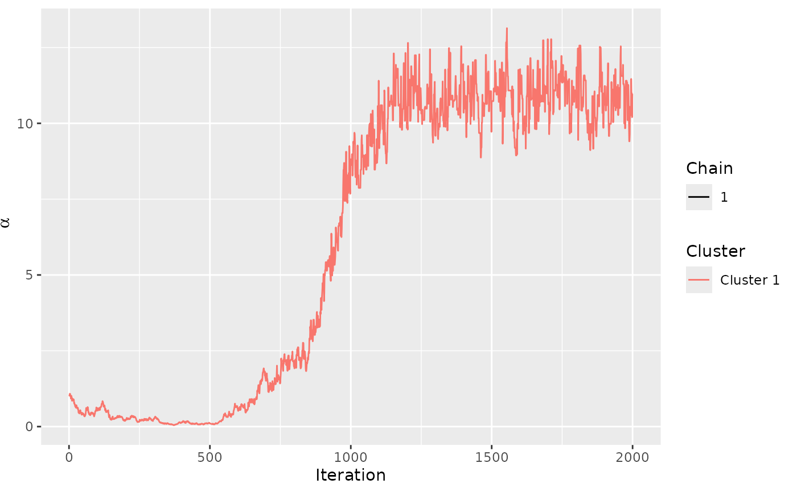
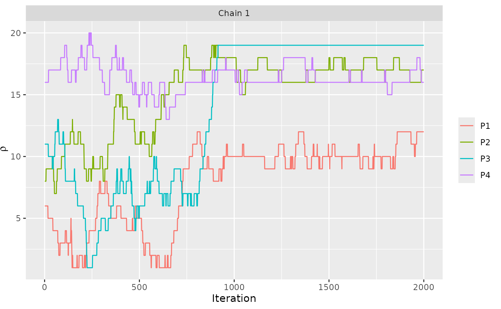

Compute the posterior distributions of the parameters of the Bayesian Mallows Rank Model, given rankings or preferences stated by a set of assessors.
The BayesMallows package uses the following parametrization of the
Mallows rank model (Mallows 1957)
:
$$p(r|\alpha,\rho) = (1/Z_{n}(\alpha)) \exp{-\alpha/n d(r,\rho)}$$ where
\(r\) is a ranking, \(\alpha\) is a scale parameter, \(\rho\) is the
latent consensus ranking, \(Z_{n}(\alpha)\) is the partition function
(normalizing constant), and \(d(r,\rho)\) is a distance function
measuring the distance between \(r\) and \(\rho\). Note that some
authors use a Mallows model without division by \(n\) in the exponent;
this includes the PerMallows package, whose scale parameter
\(\theta\) corresponds to \(\alpha/n\) in the BayesMallows
package. We refer to (Vitelli et al. 2018)
for further
details of the Bayesian Mallows model.
compute_mallows always returns posterior distributions of the latent
consensus ranking \(\rho\) and the scale parameter \(\alpha\). Several
distance measures are supported, and the preferences can take the form of
complete or incomplete rankings, as well as pairwise preferences.
compute_mallows can also compute mixtures of Mallows models, for
clustering of assessors with similar preferences.
Usage
compute_mallows(
rankings = NULL,
preferences = NULL,
obs_freq = NULL,
metric = "footrule",
error_model = NULL,
n_clusters = 1L,
clus_thin = 1L,
nmc = 2000L,
leap_size = max(1L, floor(n_items/5)),
swap_leap = 1L,
rho_init = NULL,
rho_thinning = 1L,
alpha_prop_sd = 0.1,
alpha_init = 1,
alpha_jump = 1L,
lambda = 0.001,
alpha_max = 1e+06,
psi = 10L,
include_wcd = (n_clusters > 1),
save_aug = FALSE,
aug_thinning = 1L,
logz_estimate = NULL,
verbose = FALSE,
validate_rankings = TRUE,
na_action = "augment",
constraints = NULL,
save_ind_clus = FALSE,
seed = NULL,
cl = NULL
)Arguments
- rankings
A matrix of ranked items, of size
n_assessors x n_items. Seecreate_rankingif you have an ordered set of items that need to be converted to rankings. Ifpreferencesis provided,rankingsis an optional initial value of the rankings, generated bygenerate_initial_ranking. Ifrankingshas column names, these are assumed to be the names of the items.NAvalues in rankings are treated as missing data and automatically augmented; to change this behavior, see thena_actionargument.- preferences
A dataframe with pairwise comparisons, with 3 columns, named
assessor,bottom_item, andtop_item, and one row for each stated preference. Given a set of pairwise preferences, generate a transitive closure usinggenerate_transitive_closure. This will givepreferencesthe class"BayesMallowsTC". Ifpreferencesis not of class"BayesMallowsTC",compute_mallowswill callgenerate_transitive_closureonpreferencesbefore computations are done. In the current version, the pairwise preferences are assumed to be mutually compatible.- obs_freq
A vector of observation frequencies (weights) to apply do each row in
rankings. This can speed up computation if a large number of assessors share the same rank pattern. Defaults toNULL, which means that each row ofrankingsis multiplied by 1. If provided,obs_freqmust have the same number of elements as there are rows inrankings, andrankingscannot beNULL. Seeobs_freqfor more information andrank_freq_distrfor a convenience function for computing it.- metric
A character string specifying the distance metric to use in the Bayesian Mallows Model. Available options are
"footrule","spearman","cayley","hamming","kendall", and"ulam". The distance given bymetricis also used to compute within-cluster distances, wheninclude_wcd = TRUE.- error_model
Character string specifying which model to use for inconsistent rankings. Defaults to
NULL, which means that inconsistent rankings are not allowed. At the moment, the only available other option is"bernoulli", which means that the Bernoulli error model is used. See Crispino et al. (2019) for a definition of the Bernoulli model.- n_clusters
Integer specifying the number of clusters, i.e., the number of mixture components to use. Defaults to
1L, which means no clustering is performed. Seecompute_mallows_mixturesfor a convenience function for computing several models with varying numbers of mixtures.- clus_thin
Integer specifying the thinning to be applied to cluster assignments and cluster probabilities. Defaults to
1L.- nmc
Integer specifying the number of iteration of the Metropolis-Hastings algorithm to run. Defaults to
2000L. Seeassess_convergencefor tools to check convergence of the Markov chain.- leap_size
Integer specifying the step size of the leap-and-shift proposal distribution. Defaults
floor(n_items / 5).- swap_leap
Integer specifying the step size of the Swap proposal. Only used when
error_modelis notNULL.- rho_init
Numeric vector specifying the initial value of the latent consensus ranking \(\rho\). Defaults to NULL, which means that the initial value is set randomly. If
rho_initis provided whenn_clusters > 1, each mixture component \(\rho_{c}\) gets the same initial value.- rho_thinning
Integer specifying the thinning of
rhoto be performed in the Metropolis- Hastings algorithm. Defaults to1L.compute_mallowssave everyrho_thinningth value of \(\rho\).- alpha_prop_sd
Numeric value specifying the standard deviation of the lognormal proposal distribution used for \(\alpha\) in the Metropolis-Hastings algorithm. Defaults to
0.1.- alpha_init
Numeric value specifying the initial value of the scale parameter \(\alpha\). Defaults to
1. Whenn_clusters > 1, each mixture component \(\alpha_{c}\) gets the same initial value. When chains are run in parallel, by providing an argumentcl = cl, thenalpha_initcan be a vector of of lengthlength(cl), each element of which becomes an initial value for the given chain.- alpha_jump
Integer specifying how many times to sample \(\rho\) between each sampling of \(\alpha\). In other words, how many times to jump over \(\alpha\) while sampling \(\rho\), and possibly other parameters like augmented ranks \(\tilde{R}\) or cluster assignments \(z\). Setting
alpha_jumpto a high number can speed up computation time, by reducing the number of times the partition function for the Mallows model needs to be computed. Defaults to1L.- lambda
Strictly positive numeric value specifying the rate parameter of the truncated exponential prior distribution of \(\alpha\). Defaults to
0.1. Whenn_cluster > 1, each mixture component \(\alpha_{c}\) has the same prior distribution.- alpha_max
Maximum value of
alphain the truncated exponential prior distribution.- psi
Integer specifying the concentration parameter \(\psi\) of the Dirichlet prior distribution used for the cluster probabilities \(\tau_{1}, \tau_{2}, \dots, \tau_{C}\), where \(C\) is the value of
n_clusters. Defaults to10L. Whenn_clusters = 1, this argument is not used.- include_wcd
Logical indicating whether to store the within-cluster distances computed during the Metropolis-Hastings algorithm. Defaults to
TRUEifn_clusters > 1and otherwiseFALSE. Settinginclude_wcd = TRUEis useful when deciding the number of mixture components to include, and is required byplot_elbow.- save_aug
Logical specifying whether or not to save the augmented rankings every
aug_thinningth iteration, for the case of missing data or pairwise preferences. Defaults toFALSE. Saving augmented data is useful for predicting the rankings each assessor would give to the items not yet ranked, and is required byplot_top_k.- aug_thinning
Integer specifying the thinning for saving augmented data. Only used when
save_aug = TRUE. Defaults to1L.- logz_estimate
Estimate of the partition function, computed with
estimate_partition_function. Be aware that when using an estimated partition function whenn_clusters > 1, the partition function should be estimated over the whole range of \(\alpha\) values covered by the prior distribution for \(\alpha\) with high probability. In the case that a cluster \(\alpha_c\) becomes empty during the Metropolis-Hastings algorithm, the posterior of \(\alpha_c\) equals its prior. For example, if the rate parameter of the exponential prior equals, say \(\lambda = 0.001\), there is about 37 % (or exactly:1 - pexp(1000, 0.001)) prior probability that \(\alpha_c > 1000\). Hence whenn_clusters > 1, the estimated partition function should cover this range, or \(\lambda\) should be increased.- verbose
Logical specifying whether to print out the progress of the Metropolis-Hastings algorithm. If
TRUE, a notification is printed every 1000th iteration. Defaults toFALSE.- validate_rankings
Logical specifying whether the rankings provided (or generated from
preferences) should be validated. Defaults toTRUE. Turning off this check will reduce computing time with a large number of items or assessors.- na_action
Character specifying how to deal with
NAvalues in therankingsmatrix, if provided. Defaults to"augment", which means that missing values are automatically filled in using the Bayesian data augmentation scheme described in Vitelli et al. (2018) . The other options for this argument are"fail", which means that an error message is printed and the algorithm stops if there areNAs inrankings, and"omit"which simply deletes rows withNAs in them.- constraints
Optional constraint set returned from
generate_constraints. Defaults toNULL, which means the the constraint set is computed internally. In repeated calls tocompute_mallows, with very large datasets, computing the constraint set may be time consuming. In this case it can be beneficial to precompute it and provide it as a separate argument.- save_ind_clus
Whether or not to save the individual cluster probabilities in each step. This results in csv files
cluster_probs1.csv,cluster_probs2.csv, ..., being saved in the calling directory. This option may slow down the code considerably, but is necessary for detecting label switching using Stephen's algorithm. Seelabel_switchingfor more information.- seed
Optional integer to be used as random number seed.
- cl
Optional cluster.
References
Crispino M, Arjas E, Vitelli V, Barrett N, Frigessi A (2019).
“A Bayesian Mallows approach to nontransitive pair comparison data: How human are sounds?”
The Annals of Applied Statistics, 13(1), 492--519.
doi:10.1214/18-aoas1203
.
Mallows CL (1957).
“Non-Null Ranking Models. I.”
Biometrika, 44(1/2), 114--130.
Vitelli V, Sørensen, Crispino M, Arjas E, Frigessi A (2018).
“Probabilistic Preference Learning with the Mallows Rank Model.”
Journal of Machine Learning Research, 18(1), 1--49.
https://jmlr.org/papers/v18/15-481.html.
See also
compute_mallows_mixtures for a function that computes
separate Mallows models for varying numbers of clusters.
Other modeling:
compute_mallows_mixtures(),
smc_mallows_new_item_rank(),
smc_mallows_new_users()
Examples
# ANALYSIS OF COMPLETE RANKINGS
# The example datasets potato_visual and potato_weighing contain complete
# rankings of 20 items, by 12 assessors. We first analyse these using the Mallows
# model:
model_fit <- compute_mallows(potato_visual)
# We study the trace plot of the parameters
assess_convergence(model_fit, parameter = "alpha")

if (FALSE) assess_convergence(model_fit, parameter = "rho")
# Based on these plots, we set burnin = 1000.
model_fit$burnin <- 1000
# Next, we use the generic plot function to study the posterior distributions
# of alpha and rho
plot(model_fit, parameter = "alpha")

if (FALSE) plot(model_fit, parameter = "rho", items = 10:15)
# We can also compute the CP consensus posterior ranking
compute_consensus(model_fit, type = "CP")
#> ranking item cumprob
#> 1 1 P12 1.000
#> 2 2 P13 1.000
#> 3 3 P9 1.000
#> 4 4 P10 0.988
#> 5 5 P17 0.832
#> 6 6 P7 0.680
#> 7 7 P14 1.000
#> 8 8 P16 1.000
#> 9 9 P1 0.393
#> 10 10 P11 0.654
#> 11 11 P5 0.844
#> 12 12 P19 1.000
#> 13 13 P20 0.509
#> 14 14 P18 1.000
#> 15 15 P6 1.000
#> 16 16 P4 0.578
#> 17 17 P2 0.963
#> 18 18 P15 1.000
#> 19 19 P3 1.000
#> 20 20 P8 1.000
# And we can compute the posterior intervals:
# First we compute the interval for alpha
compute_posterior_intervals(model_fit, parameter = "alpha")
#> parameter mean median conf_level hpdi central_interval
#> 1 alpha 10.799 10.757 95 % [9.500,12.198] [9.499,12.198]
# Then we compute the interval for all the items
if (FALSE) compute_posterior_intervals(model_fit, parameter = "rho")
# ANALYSIS OF PAIRWISE PREFERENCES
if (FALSE) {
# The example dataset beach_preferences contains pairwise
# preferences between beaches stated by 60 assessors. There
# is a total of 15 beaches in the dataset.
# In order to use it, we first generate all the orderings
# implied by the pairwise preferences.
beach_tc <- generate_transitive_closure(beach_preferences)
# We also generate an inital rankings
beach_rankings <- generate_initial_ranking(beach_tc, n_items = 15)
# We then run the Bayesian Mallows rank model
# We save the augmented data for diagnostics purposes.
model_fit <- compute_mallows(rankings = beach_rankings,
preferences = beach_tc,
save_aug = TRUE,
verbose = TRUE)
# We can assess the convergence of the scale parameter
assess_convergence(model_fit)
# We can assess the convergence of latent rankings. Here we
# show beaches 1-5.
assess_convergence(model_fit, parameter = "rho", items = 1:5)
# We can also look at the convergence of the augmented rankings for
# each assessor.
assess_convergence(model_fit, parameter = "Rtilde",
items = c(2, 4), assessors = c(1, 2))
# Notice how, for assessor 1, the lines cross each other, while
# beach 2 consistently has a higher rank value (lower preference) for
# assessor 2. We can see why by looking at the implied orderings in
# beach_tc
subset(beach_tc, assessor %in% c(1, 2) &
bottom_item %in% c(2, 4) & top_item %in% c(2, 4))
# Assessor 1 has no implied ordering between beach 2 and beach 4,
# while assessor 2 has the implied ordering that beach 4 is preferred
# to beach 2. This is reflected in the trace plots.
}
# CLUSTERING OF ASSESSORS WITH SIMILAR PREFERENCES
if (FALSE) {
# The example dataset sushi_rankings contains 5000 complete
# rankings of 10 types of sushi
# We start with computing a 3-cluster solution
model_fit <- compute_mallows(sushi_rankings, n_clusters = 3,
nmc = 10000, verbose = TRUE)
# We then assess convergence of the scale parameter alpha
assess_convergence(model_fit)
# Next, we assess convergence of the cluster probabilities
assess_convergence(model_fit, parameter = "cluster_probs")
# Based on this, we set burnin = 1000
# We now plot the posterior density of the scale parameters alpha in
# each mixture:
model_fit$burnin <- 1000
plot(model_fit, parameter = "alpha")
# We can also compute the posterior density of the cluster probabilities
plot(model_fit, parameter = "cluster_probs")
# We can also plot the posterior cluster assignment. In this case,
# the assessors are sorted according to their maximum a posteriori cluster estimate.
plot(model_fit, parameter = "cluster_assignment")
# We can also assign each assessor to a cluster
cluster_assignments <- assign_cluster(model_fit, soft = FALSE)
}
# DETERMINING THE NUMBER OF CLUSTERS
if (FALSE) {
# Continuing with the sushi data, we can determine the number of cluster
# Let us look at any number of clusters from 1 to 10
# We use the convenience function compute_mallows_mixtures
n_clusters <- seq(from = 1, to = 10)
models <- compute_mallows_mixtures(n_clusters = n_clusters, rankings = sushi_rankings,
nmc = 6000, alpha_jump = 10, include_wcd = TRUE)
# models is a list in which each element is an object of class BayesMallows,
# returned from compute_mallows
# We can create an elbow plot
plot_elbow(models, burnin = 1000)
# We then select the number of cluster at a point where this plot has
# an "elbow", e.g., at 6 clusters.
}
# SPEEDING UP COMPUTION WITH OBSERVATION FREQUENCIES
# With a large number of assessors taking on a relatively low number of unique rankings,
# the obs_freq argument allows providing a rankings matrix with the unique set of rankings,
# and the obs_freq vector giving the number of assessors with each ranking.
# This is illustrated here for the potato_visual dataset
#
# assume each row of potato_visual corresponds to between 1 and 5 assessors, as
# given by the obs_freq vector
set.seed(1234)
obs_freq <- sample.int(n = 5, size = nrow(potato_visual), replace = TRUE)
m <- compute_mallows(rankings = potato_visual, obs_freq = obs_freq)
# See the separate help page for more examples, with the following code
help("obs_freq")